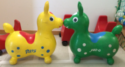

Der Förderverein Kindertagesstätte Gut Kullen I wurde am 27.06.2016 gegründet und ist ein gemeinnütziger Verein. In der Gründungsveranstaltung wurden die Satzung und Finanzordnung beschlossen und ein Vorstand für den Verein gewählt. Alle ausführlichen Informationen geben wir auf den Folgeseiten:  Eine Einsicht in unsere Satzung und der Finanzordung sind ebenso selbstverständlich wie die Vorstellung unseres Vorstandes. Wer Mitglied werden möchte, kann sich auf der „Mitglied werden – Seite“ informieren. Auch unsere Werbepartner sowie weiterführende Links wollen wir nicht unerwähnt lassen.